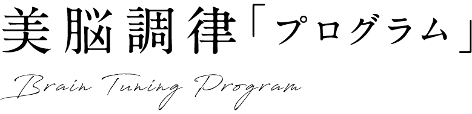

頑張っているのに、変わらない。学び続けているのに、現実は動かない。心理学を学んでも、カウンセリングを受けても、気持ちは楽になったけど現実は変わらなかった。——その理由が、ここにあります。
30年近く、広告・マーケティングの現場で見てきたのは、戦略が正しいだけでは機能しない瞬間。
対人コミュニケーションの現場でも、同じことが起きていました。論理的に正しい提案が、なぜか実行されない。善かれ、と思ったことが、受け入れられない。
その原因は、伝え方でも、能力でもありませんでした。
人生分岐点。違和感、不安。本当に今の選択でいいのか。
その違和感、その不安を——「知覚の揺らぎ」だと、疑ってみてください。未来側から、人生とキャリアの選択を、変えていく。
恋愛、仕事、親子、友人関係。一見まったく別の出来事でも、同じ人の中では同じ構造が繰り返されていることがあります。美脳が見るのは、失敗した一場面ではありません。その人が何を見て、どう反応し、なぜ同じ場所へ戻ってくるのか。その構造を一緒に見つけ、今まで選べなかった方向まで、可動域を広げていきます。
③ よくある悩み
このままでいいのか、迷っている。でも、動けない。
人生の分岐点で、「後悔する選択」はしたくない。なのに、決め手が見つからない。
自己理解も、キャリア分析も、やった。転職したとしても——本当にやりたい方向が、満たされる気がしない。
副業、起業、婚活・恋活。始めたい気持ちはある。なのに、動けない。
強みは、わかった。わかっても——年収アップにつながるところまで、行動できない。
——気づいていますか。どのケースにも、共通していることがあります。
「わかっている」のに、「動けない」。
それは、あなたの意志が弱いからではありません。わかること(知識)と、動くこと(実行)は、そもそも違う層にあるからです。自己理解も、キャリア分析も、強み診断も——すべて、知識の層で起きていること。でも、動けるかどうかを決めているのは、その一段下、実行の層。いくら知識の層を磨いても、実行の層には、届きません。
IQとアクションの中間層
知識の層
わかっている、理解している
知識と実行のあいだに、橋がかかっていない
実行の層
動ける、変わる
⑤ プログラムの背景
美脳調律プログラムは、数十年の広告・マーケティング実務と、個人・小規模経営における対人コミュニケーションの実践知から立ち上がったものですが、設計の起点は過去の分析ではありません。「動けている未来」の状態から、今の構造を逆算して組み立てています。理論のための理論ではなく、現場で繰り返し見えてきた「見落とされやすい構造」を、その逆算の中に組み込んだプログラムです。
約30年前
広告・マーケティングの現場に入る
その後
個人・小規模経営の対人コミュニケーション実務へ
現在
美脳調律プログラムとして設計
⑥ 逆説の真実
情報を増やせば動ける、は正しくありません。
情報が増えるほど、判断が止まることがあります。
努力すれば変わる、も正しくありません。
努力するほど、同じ結果に戻ることがあります。
変化を生むのは、「理解」ではありません。
理解した先の、「わかっているのに、できない」を超える設計です。
客観視は、鍛えるものではありません。
知識と実行のあいだに差が生まれるのは、見えている次元が違うから。知識は頭の中の次元で、実行は関係の中の周波数で成立します。メタ視点とは、知識の次元から実行の次元(周波数)に、合わせ直すことです。
⑦ Before / After